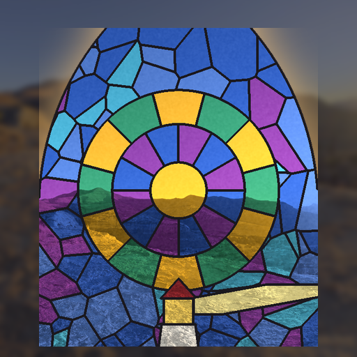

<- all projects

Stained Glass Sketchbook
PC
Volume
Live
Every window holds a memory.
A storm broke every window of the Lantern Chapel, a little chapel on a northern cliff under a lighthouse. Odile has kept that light for sixty years, and her memory is going. As the glazier's apprentice she sent for, you read her briefs, pick sheets of glass and fill the leaded pieces, layering two glasses to mix new colours and aiming the light onto marked stones on the chapel floor. Each window you glaze brings back one of her memories. 50 story windows over four seasons, 10 glass sheets with 55 two-layer mixes and 14 real skies to shine through your work.